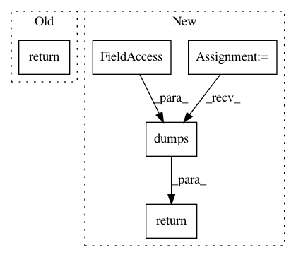

f776c0b8ead2d3bc04a9ddcb80a0f0c36fe030ca,syft/grid/clients/data_centric_fl_client.py,DataCentricFLClient,simplify,#Any#Any#,289
Before Change
@staticmethod
def simplify(_worker: AbstractWorker, worker: "VirtualWorker") -> tuple:
return BaseWorker.simplify(_worker, worker)
@staticmethod
def detail(worker: AbstractWorker, worker_tuple: tuple) -> Union["VirtualWorker", int, str]:
detailed = BaseWorker.detail(worker, worker_tuple)
After Change
is_client_worker = json.dumps(data_centric_fl_client.is_client_worker)
log_msgs = json.dumps(data_centric_fl_client.log_msgs)
verbose = json.dumps(data_centric_fl_client.verbose)
encoding = json.dumps(data_centric_fl_client.encoding)
timeout = json.dumps(data_centric_fl_client.timeout)
return (address, id, is_client_worker, log_msgs, verbose, encoding, timeout)
@staticmethod
def detail(worker: AbstractWorker, client_tuple: tuple) -> "DataCentricFLClient":
In pattern: SUPERPATTERN
Frequency: 3
Non-data size: 5
Instances
Project Name: OpenMined/PySyft
Commit Name: f776c0b8ead2d3bc04a9ddcb80a0f0c36fe030ca
Time: 2020-10-12
Author: 2017csb1092@iitrpr.ac.in
File Name: syft/grid/clients/data_centric_fl_client.py
Class Name: DataCentricFLClient
Method Name: simplify
Project Name: polyaxon/polyaxon
Commit Name: dc5a2a7f4d695c749a7c5cba1c7ad661764aceca
Time: 2019-02-17
Author: mouradmourafiq@gmail.com
File Name: polyaxon/scheduler/spawners/templates/dockerizers/manager.py
Class Name: ResourceManager
Method Name: _get_container_pod_env_vars
Project Name: OpenMined/PySyft
Commit Name: b2cc6d7d3291fcf739415a65ac34026afac2a877
Time: 2020-08-10
Author: andrew@openmined.org
File Name: src/syft/core/node/common/node.py
Class Name: Node
Method Name: get_metadata_for_client